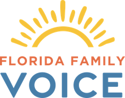
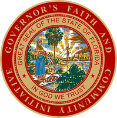
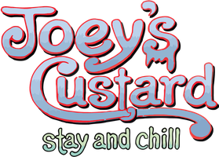

Mercy Seeds Consulting
The advice comes from having sat in the chair.
Since 2017 Erik has advised individuals, organizations, ministries and families who carry real influence and want to use it well. The work covers funding for faith-based initiatives, business opportunities on both the nonprofit and for-profit side, and the questions underneath them: strategy, vision, fundraising, culture, staffing and focus.
He has built two national foundations from their founding, run a statewide network inside government, owned restaurant franchises, and now leads Florida Family Voice.
What he’s built, run and owned



Who it’s for
Individuals and families of influence
Funding advice for faith-based initiatives, and the questions that come with affluence and influence.
Ministries and nonprofits
Strategy, vision, fundraising, culture, staffing and focus, from someone who has been the founding president of two national ones.
Businesses
Business opportunities on both the nonprofit and for-profit side, from an owner who has run three restaurants of his own.
Consulting inquiries: erikdellenback@gmail.com